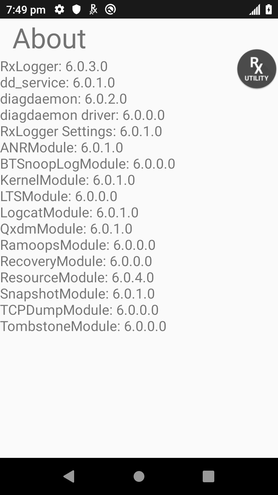

Overview
RxLogger data collection modules control the logging of individual components of an Android system. Modules can be enabled or disabled and their parameters can be modified as needed. Of the 12 included modules, seven are enabled by default:
Enabled by default:
Disabled by default:
Tap the "About" button for a list of active RxLogger modules:

Tap the Settings button to edit module settings:

See also:
ANR Module
Controls collection of data from Android's "application not responding" (ANR) events. Event data is copied directly from the Android system and saved in a file called trace.txt or some variant thereof. For example, the ANR event for a post-loaded app would be similar to trace-<app_package_name>.txt.
| Name | Description | Type | Default Value |
|---|---|---|---|
| Enable Module | Enable or disable collection of ANR files | Boolean | true |
| Log path | The storage path for ANR files | String | <RxLogger_Path>/anr/ |
BTSnooplog Module
The BTSnooplog Module captures Bluetooth HCI (Host Controller Interface) snoop logs from the device, containing all Bluetooth transmissions made on the connected Bluetooth peripheral. Logs are stored in the folder <RxLogger_Path>/btsnooplog/.
Note: When a Bluetooth peripheral is paired and BTSnooplog module is enabled, expect Bluetooth to disconnect and re-connect to the peripheral as required for BTSnooplog to start capturing snoop logs. This also occurs when any changes are made to BTSnooplog configuration.
| Name | Description | Type | Default Value |
|---|---|---|---|
| Enable Module | Enable or disable BTSnooplog module log collection | Boolean | false |
| Log path | The storage path for BTSnooplog files | String | <RxLogger_Path>/btsnooplog/ |
| Select Trace Level | Determines the amount of information logged | List | NONE - Index 0 ERROR WARNING (default) API EVENT FULL VERBOSE |
Kernel Module
The Kernel module captures kmsg data from the Android system and outputs it to a series of numbered files (i.e. KLog0.txt, KLog1.txt, KLog2.txt) with 0 being the newest.
| Name | Description | Type | Default Value |
|---|---|---|---|
| Enable Module | Enable or disable collection of kernel logs | Boolean | true |
| Log path | The storage path for kernel logs | String | <RxLogger_Path> |
| Kernel Log filename | The base file name to save kernel logs | String | KLog |
| Kernel Log File size (MB) | The size of each kernel log file before rotating in megabytes | Integer | 10 |
| Kernel Log Interval (sec) | The rate at which kernel logs will be dumped into the collecting file | Integer | 30 |
| Kernel Log file count | The maximum number of kernel log files to keep at any one time | Integer | 2 |
| Enable System Timestamp in Kernel Log | Enable or disable time stamp in kernel logs | Boolean | true |
| System Timestamp Interval | The interval to add timestamp in kernel logs | Integer | 60 |
| Enable Logcat Integration Override | Enable or disable logcat integration | Boolean | false |
Logcat Module
Captures data from Android's internal logging mechanism, sometimes known as logcat buffers. The Logcat module captures any or all of the logcat buffers:
- System
- Event
- Radio
- Main
- Crash
Module options allow data from any or all enabled buffers to be stored in separate files or in a single combined file. Output is stored in a series of numbered text files (i.e. `Main0.txt`, `Main1.txt`, `Main2.txt`) with 0 being the newest.
Reference material: Android logging and filtering
| Name | Description | Type | Default Value |
|---|---|---|---|
| Enable Module | Enable or disable collection of logcat logs | Boolean | true |
| Log path | The storage path for logcat logs | String | <RxLogger_Path> |
| Enable main logcat | Enable or disable the collection of the main buffer | Boolean | true |
| Main log interval (sec) | The rate at which main buffer logs will be dumped into the collecting file | Integer | 30 |
| Main log filename | The base file name to save main buffer logs | String | Main |
| Main log file count | The maximum number of main buffer log files to keep at any one time | Integer | 2 |
| Main log file size (MB) | The size of each main buffer log file before rotating in megabytes | Integer | 5 |
| Main log filter (sec) | Custom logcat filter to run on the main buffer | String | |
| Enable event logcat | Enable or disable the collection of the event buffer | Boolean | true |
| Event log interval (sec) | The rate at which event buffer logs will be dumped into the collecting file | Integer | 30 |
| Event log filename | The base file name to save event buffer logs | String | Event |
| Event log file count | The maximum number of event buffer log files to keep at any one time | Integer | 2 |
| Event log file size (MB) | The size of each event buffer log file before rotating in megabytes | Integer | 5 |
| Event log filter (sec) | Custom logcat filter to run on the event buffer | String | |
| Enable radio logcat | Enable or disable the collection of the radio buffer | Boolean | true |
| Radio log interval (sec) | The rate at which radio buffer logs will be dumped into the collecting file | Integer | 30 |
| Radio log filename | The base file name to save radio buffer logs with | String | Radio |
| Radio log file count | The maximum number of radio buffer log files to keep at any one time | Integer | 2 |
| Radio log file size (MB) | The size of each radio buffer log file before rotating in megabytes | Integer | 5 |
| Radio log filter (sec) | Custom logcat filter to run on the radio buffer | String | |
| Enable system logcat | Enable or disable the collection of the system buffer | Boolean | true |
| System log interval (sec) | The rate at which system buffer logs will be dumped into the collecting file | Integer | 30 |
| System log filename | The base file name to save system buffer logs | String | System |
| System log file count | The maximum number of system buffer log files to keep at any one time | Integer | 2 |
| System log file size (MB) | The size of each system buffer log file before rotating in megabytes | Integer | 5 |
| System log filter (sec) | Custom logcat filter to run on the system buffer | String | |
| Enable crash logcat | Enable or disable the collection of the crash buffer | Boolean | true |
| Crash log interval (sec) | The rate at which crash buffer logs will be dumped into the collecting file | Integer | 30 |
| Crash log filename | The base file name to save crash buffer logs | String | Crash |
| Crash log file count | The maximum number of crash buffer log files to keep at any one time | Integer | 2 |
| Crash log file size (MB) | The size of each crash buffer log file before rotating in megabytes | Integer | 5 |
| Crash log filter (sec) | Custom logcat filter to run on the crash buffer | String | |
| Enable combined logcat | The maximum number of crash buffer log files to keep at any one time | Integer | 2 |
| Enable main buffer | Enable or disable the addition of the main buffer into the combined locat file | Boolean | false |
| Enable event buffer | Enable or disable the addition of the event buffer into the combined locat file | Boolean | false |
| Enable radio buffer | Enable or disable the addition of the radio buffer into the combined locat file | Boolean | false |
| Enable system buffer | Enable or disable the addition of the system buffer into the combined locat file | Boolean | false |
| Enable crash buffer | Enable or disable the addition of the crash buffer into the combined locat file | Boolean | false |
| Combined log interval (sec) | The rate at which combined buffer logs will be dumped into the collecting file | Integer | 30 |
| Combined log filename | The base file name to save combined buffer logs | String | Combined |
| Combined log file count | The maximum number of crash buffer log files to keep at any one time | Integer | 2 |
| Combined log file size (MB) | The size of each combined buffer log file before rotating in megabytes | Integer | 10 |
| Combined log filter (sec) | Custom logcat filter to run on the combined buffer | String |
LTS Module
The Long Term Storage (LTS) module gathers log files generated by other active modules and stores them together for device health and behavior analysis over a period of time. Module output files are compressed with gzip and stored in the specified path, which is appended as shown below. Multiple stores in a single hour (noted in military time) are numbered from 00-99.
Storage Path:
/<device_model>/<BSP_build_number>/<device_serial_number>/<YYMMDD>/<HHxx>/
Example:
TC51/91-01-21-NN-00/16885225D0029/170621/2100/
| Name | Description | Type | Default Value |
|---|---|---|---|
| Enable Module | Enable or disable LTS collection | Boolean | false |
| Log path | The storage path for LTS files | String | <SDcard>/RxLoggerLTS/ |
Qxdm Module
The Qxdm Module captures Qualcomm Modem Logs from the device, which are read using a Qualcomm utility. This module also accepts a user-defined configuration file generated by Qualcomm tools and stored in the <RxLogger_Path>/qxdm/cfg/Custom_filter.cfg folder.
Warning: Output from this module consumes all available storage space if the log size parameter is left unspecified. Zebra recommends specifying a log size in accordance with available storage.
| Name | Description | Type | Default Value |
|---|---|---|---|
| Enable Module | Enable or disable Qxdm collection | Boolean | false |
| Log path | The storage path for Qxdm files | String | <RxLogger_Path>/qxdm/logs/ |
| Qxdm Log Size (MB) | Specify the size of each individual Qxdm log file | Integer | 100 |
| Qxdm test sets to keep | Number of test sets to keep (one test set is a start and stop) | Integer | 3 |
| Choose Log Filter | Select the log filter that Qxdm needs to process (custom filter to be pushed) | List | Default filter – Index 0 |
| Path for User Defined Filter | The file name if using a user-defined config file <RxLogger_Path>/qxdm/cfg/Custom_filter.cfg | String | Custom_filter.cfg |
| Choose Logging Limit Type | Select custom log option to specify the maximum number of log files to be generated | List | Default logging – Index 0 |
| Custom Logging | Number of log files to keep on a test set which must be specified by user | Integer | 3 |
Ramoops Module
Captures the last kmsg from the device, writing it to persistent memory immediately prior to a system crash. Ramoops outputs text files generated by the system at boot or after a kernel panic. These files contain raw kmsg data from the boot immediately prior to the crash. More about Ramoops.
| Name | Description | Type | Default Value |
|---|---|---|---|
| Enable Module | Enable or disable Ramoops collection | Boolean | true |
| Log path | The storage path for Ramoops files | String | <RxLogger_Path>/ramoops/ |
| Base filename | The base file name of stored ramoops file | String | ramoops |
| Ramoops file count | The maximum number of ramoops log files to keep at any one time | Integer | 2 |
Recovery Module
The Recovery Module captures recovery/OSupdate logs as well as Android's Rescue Party logs from the device. Rescue Party was introduced starting with Android 8.0, preventing devices from being stuck in reboot loops. If a bootloop is detected, Android sends out a "rescue party" to perform a series of actions in attempts to recover the device. As a last resort, Rescue Party reboots the device into recovery mode and prompts the user to perform a factory reset. Recovery logs are stored in folder <RxLogger_Path>/recovery, e.g. sdcard/RxLogger/recovery.
| Name | Description | Type | Default Value |
|---|---|---|---|
| Enable Module | Enable or disable Recovery module log collection | Boolean | false |
Resource Module
Captures device information and system statistics at specified intervals to determine the health and behavior of device resources over a period of time. Outputs collected metrics as a series of comma separated values stored in files with a .csv extension.
| Name | Description | Type | Default Value |
|---|---|---|---|
| Enable Module | Enable or disable Resource collection | Boolean | true |
| Log path | The storage path for Resource files | String | <RxLogger_Path> |
| Resource log Interval (sec) | The rate at which Resource collects and logs information | Integer | 60 |
| Resource Log file size (MB) | The size of each Resource Log file before rotating in megabytes | Integer | 10 |
| Resource Log file count | The maximum number of Resource files to keep at any one time | Integer | 2 |
| Power | Enable or disable the collection of battery statistics | Boolean | true |
| System Resource | Enable or disable the collection of System Resource information | Boolean | true |
| Advanced CPU | Enable or disable the collection of CPU status | Boolean | false |
| Network | Enable or disable the collection of Network status | Boolean | true |
| Light | Enable or disable the ambient light level | Boolean | true |
| Bluetooth | Enable or disable the collection of Bluetooth information | Boolean | true |
| Heater | Enable or disable the collection of heater information | Boolean | false |
| Hide Non-Applicable data | Enable or disable the collection of data not applicable based on available device resources. For example, a WLAN only device will not log WAN data. | Boolean | false |
| Hide Raw Data | Enable or disable the collection of raw data information | Boolean | false |
Snapshot Module
Captures device information and system statistics at each "moment in time" to determine the health and behavior of device resources over a specified period. Outputs a single text file containing collected metrics for selected parameters for each specified interval. Though similar to the Resource module in function, Snapshot captures more precise data, including threads and dumpsys details along with a device fingerprint header for each file. Snapshot creates one text file per data collection set containing with the output of all enabled data selections.
| Name | Description | Type | Default Value |
|---|---|---|---|
| Enable Module | Enable or disable Snapshot collection | Boolean | true |
| Log path | The storage path for Snapshot logs | String | <RxLogger_Path>/snapshots/ |
| Log filename | The base file name of stored Snapshot file | String | snapshot |
| Log Interval (sec) | The rate at which Snapshot will collect information and dump into its file | Integer | 1800 |
| Snapshot file count | The maximum number of Snapshot files to keep at any one time | Integer | 50 |
| Top | Enable or disable the running of the “top” command for data collection | Boolean | true |
| CPU Info | Enable or disable the running of the “dumpsys cpuinfo” command for data collection | Boolean | true |
| Memory Info | Enable or disable the running of the “dumpsys meminfo -a” command for data collection | Boolean | true |
| Battery Info | Enable or disable the running of the “dumpsys batterystats” command for data collection | Boolean | true |
| Wake Locks | Enable or disable the collection of the sys/fs wake_lock information | Boolean | true |
| Time in State | Enable or disable the collection of the sys/fs cpufreq for each core | Boolean | true |
| Processes | Enable or disable the running of the “ps -p” command for data collection | Boolean | true |
| Threads | Enable or disable the running of the “ps -t -p -P” command for data collection | Boolean | true |
| Properties | Enable or disable the running of the “getprop” command for data collection | Boolean | true |
| Interfaces | Enable or disable the running of the “netcfg” command for data collection | Boolean | true |
| IP Routing Table | Enable or disable the collection of the net route for data collection | Boolean | true |
| Connectivity | Enable or disable the running of the “dumpsys connectivity” command for data collection | Boolean | true |
| Wifi | Enable or disable the running of the “dumpsys wifi” command for data collection | Boolean | true |
| File systems | Enable or disable the running of the “df” command for data collection | Boolean | true |
| Usage Stats | Enable or disable the running of the “dumpsys usagestats” command for data collection | Boolean | true |
Tcpdump Module
Captures packet data for all device network connections and outputs a binary file that can be read with Wireshark and other standards-based network analysis tools.
| Name | Description | Type | Default Value |
|---|---|---|---|
| Enable Module | Enable or disable tcpdump collection | Boolean | false |
| Log path | The storage path for tcpdump logs | String | <RxLogger_Path>/tcpdump/ |
| Base filename | The base file name of stored tcpdump file | String | capture.pcap |
| Tcpdump file size (MB) | The max file size used before rotating tcpdump files | Integer | 5 |
| Tcpdump file count | The max number of tcpdump files to keep | Integer | 2 |
Tombstone Module
Collects the Android native crash logs from the device, which contain stack traces and other details about the crashed process. Tombstone files are output in sequence starting with tombstone_00through tombstone_09 and starting again with tombstone_00. Use timestamps to determine the most recent files.
More info
| Name | Description | Type | Default Value |
|---|---|---|---|
| Enable Module | Enable or disable tombstone collection | Boolean | true |
| Log path | The storage path for tombstone logs | String | <RxLogger_Path>/tombstone/ |
Backup
Create a backup of the RxLogger folder on-demand as a .zip file containing all the RxLogger logs. This is particularly useful to save logs on a device at a specific point in time after an issue occurs. Backup logs are saved on the device as a .zip file stored in /sdcard/rxlogger/Backup-<date>-<HHMMSS>.zip, with the date and timestamp as part of the file name. Backups are triggered by any of the following methods:
- RxLogger - from the main screen, tap on the top right menu and select BackupNow.
- RxLogger Utility - tap on the round save icon, or chat head (cannot be deleted with a long press).
- Android intent - use the BackupNow broadcast intent:
com.symbol.rxlogger.intent.action.BACKUP_NOW.

|
Backup via RxLogger main screen (left) or RxUtility (right)
Related Links
- RxLogger Settings - How to configure data collection module parameters
- Intent APIs - Used to start and stop RxLogger and back up all data
- RxLogger Utility - View RxLogger logs in realtime